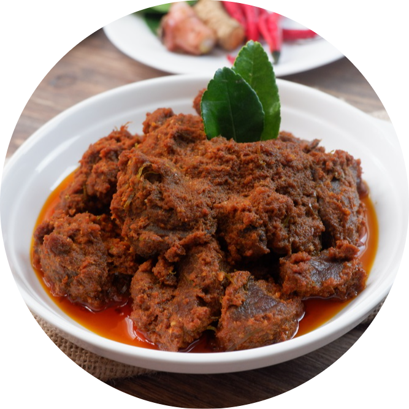
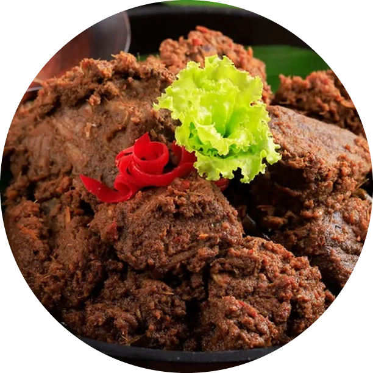
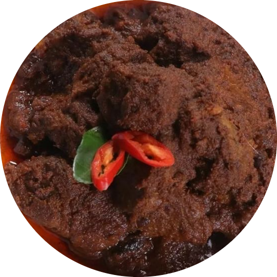

Rendang
Rendang berasal dari tanah Minangkabau, Sumatera Barat. Rendang berbahan dasar daging yang dihasilkan dari proses memasak suhu rendah dalam waktu lama dengan menggunakan aneka rempah-rempah dan santan.

Bahan-Bahan
1 kg daging sapi, potong-potong
5 buah cabai merah teropong
5 buah cabai merah keriting
9-10 buah bawang merah
5 siung bawang putih
5 cm jahe
1 1/2 sdt ketumbar
1 sdt jinten
3 butir kemiri
1 sdt garam
1 sdt kaldu bubuk
Lada secukupnya
Minyak secukupnya
1 buah kelapa parut
5 lembar daun jeruk
5 butir kapulaga
5 butir cengkih
5 cm lengkuas
5 lembar daun salam
2 batang serai
5 cm kayu manis
Pala secukupnya, parut
600 ml santan encer
200 ml santan kental
Cara Membuat
1. Haluskan cabai merah teropong, cabai merah keriting, bawang merah, bawang putih, jahe, ketumbar, jinten, kemiri, garam, kaldu bubuk, lada, dan minyak menggunakan blender. Sisihkan;
2. Sangrai kelapa parut. Sisihkan;
3. Masak bumbu yang sudah dihaluskan, masukkan potongan daging sapi, tambahkan daun jeruk, kapulaga cengkih, lengkuas, daun salam, kayu manis, parutan pala, dan kelapa sangrai. Aduk-aduk. Tambahkan santan cair. Masak sebentar;
4. Masukkan santan kental, masak hingga kering. Angkat dan sajikan.

